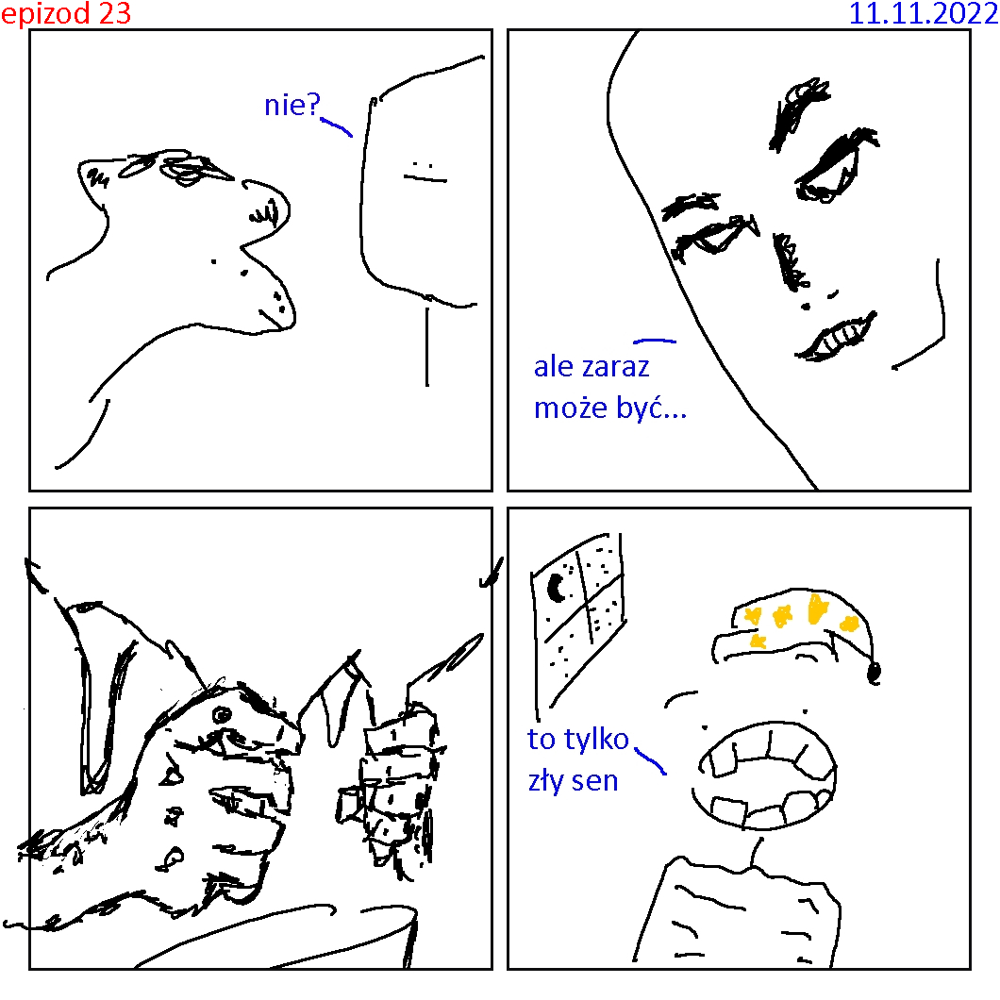
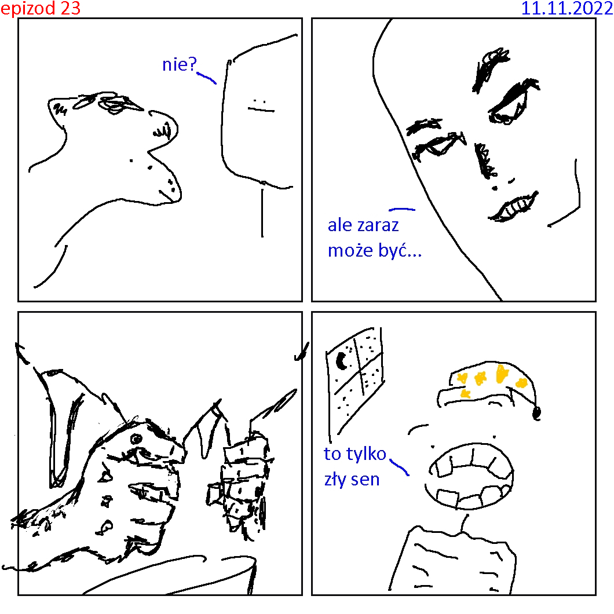

Zjedź na dół
Epizody
- Epizod 1
- Epizod 2
- Epizod 3
- Epizod 4
- Epizod 5
- Epizod 6
- Epizod 7
- Epizod 8
- Epizod 9
- Epizod 10
- Epizod 11
- Epizod 12
- Epizod 13
- Epizod 17
- Epizod 21
- Epizod 22
- Epizod 23
- Epizod 24
- Epizod 25
- Epizod 26
- Epizod 34
- Epizod 35
- Epizod 40
- Epizod 43
- Epizod 44
- Epizod 45
- Epizod 50
- Epizod 57
Bob Mleczarz
Oto strefa czytania.
Tutaj spędzisz najwięcej czasu. Między epizodami styl rysunku i oznakowań nieco się zmienia, ale są generalne zasady ułatwiające czytanie. Najważniejsze informacje są umieszczone w rogu każdego obrazka. Numer epizodu znajduje się w górnym lewym rogu, a data jego kreacji w prawym.
Na lewym panelu znajdziesz rozpiskę wszystkich epizodów.
Podzielone są one na osobne, oraz takie które mają kontynuacje.
Epizod który ma w lewym dolnym rogu >> jest kontynuowany.
Pierwszy przykład takiego epizodu to ep 14.
Jeśli podczas czytania masz jakieś problemy z ogarnięciem postaci, udaj się do odpowiadającej temu zagadnieniu zakładki postacie i doczytaj. Możliwe że dowiesz się nieco więcej o bohaterach i ich intencjach.
Jeszcze wspomne że na lewym panelu sekcja najnowsze otwiera obrazek w nowej karcie dla szybkiego obczajenia epizodu. Jeśli chcesz przeczytać epizod wraz z kontynuacją, np. Bitka, znajdź epizody w spisie.


 
